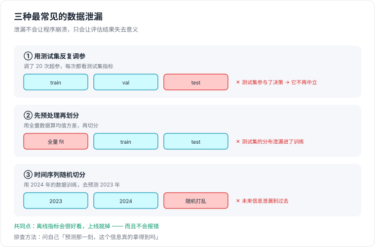
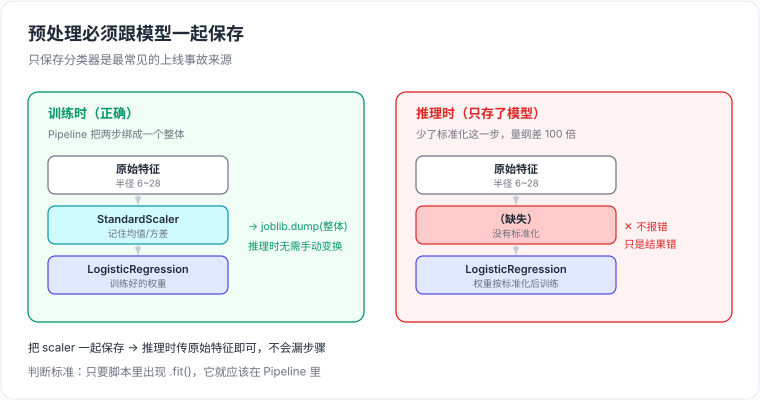
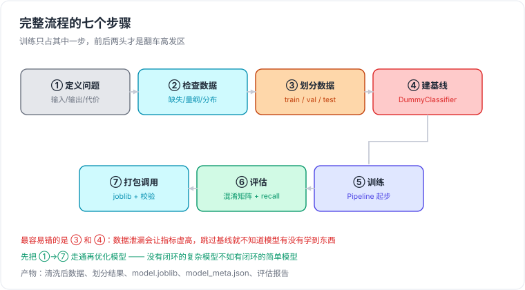

这是「写给工程师的机器学习入门」系列的最后一篇。 前五篇讲了概念、系统和评估。这篇把它们串成一条能照着做的流程—— 从一份数据开始，到模型能被调用为止。
结论先说
完整流程只有七步，但最容易错的不是训练，是前后两头：
① 定义问题 → ② 检查数据 → ③ 划分数据集 → ④ 建基线
→ ⑤ 训练 → ⑥ 评估 → ⑦ 打包与调用三个最容易翻车的地方：
- 数据泄漏——用了预测时拿不到的信息，离线指标漂亮，上线就崩
- 没建基线——不知道模型比「瞎猜」好多少
- 预处理没跟模型一起保存——训练时归一化了，推理时忘了，结果完全不一致
下面用一份真实可跑的数据走完全程。
一、先定义问题：输入、输出、代价
在写任何代码之前，必须回答三件事：
| 问题 | 示例答案 |
|---|---|
| 输入是什么？ | 30 个数值特征（细胞核的半径、纹理、周长等测量值） |
| 输出是什么？ | 二分类：恶性 / 良性 |
| 错了会怎样？ | 漏判恶性（假负例）代价远大于误判良性（假正例） |
第三条决定了后面选什么指标。这里漏判是致命的，所以recall 优先——这正是上一篇讲过的取舍。
from sklearn.datasets import load_breast_cancer
data = load_breast_cancer(as_frame=True)
X, y = data.data, data.target # y: 0 = 恶性, 1 = 良性
print(X.shape) # (569, 30)
print(y.value_counts()) # 1: 357, 0: 212 → 不算严重失衡，但要留意二、检查数据：三类问题先看一遍
拿到数据先做三件事，不要急着训练。
import pandas as pd
# 1. 缺失值
print(X.isna().sum().sum()) # 0 → 这份数据没有缺失
# 2. 量纲差异（差几个数量级会影响距离类模型）
print(X.describe().loc[["min", "max"]].T.head())
# 半径 ~6-28，面积 ~140-2500 → 量纲差 100 倍，必须标准化
# 3. 类别分布
print(y.value_counts(normalize=True))
# 0: 37.3%, 1: 62.7%如果缺失值不为 0，先想清楚是删除还是填充——填充本身就是模型的一部分，后面要跟模型一起保存。
三、划分数据集：这一步最容易埋雷

*图 1：三种泄漏——用测试集调参、预处理先做后分、时间序列随机切分。*
正确做法
from sklearn.model_selection import train_test_split
X_train, X_test, y_train, y_test = train_test_split(
X, y,
test_size=0.2, # 20% 留作测试
random_state=42, # 固定随机种子，保证可复现
stratify=y, # 按类别比例分层，避免某一类全跑到一边
)三个参数都有讲究：
random_state：不固定的话每次结果都不一样，无法比较模型改动stratify=y：类别不平衡时，不分层可能导致测试集里没有正例test_size：样本少时 20% 可能太少，用交叉验证更稳
三个常见泄漏
① 用测试集反复调参
调了 20 次超参数，每次看测试集指标，最后选了个「测试集上最好」的——这个测试集实际上已经被用来训练决策了。
正确做法是三份划分：
# train 训练 / val 调参 / test 只在最后用一次
X_tr, X_tmp, y_tr, y_tmp = train_test_split(X, y, test_size=0.4, stratify=y, random_state=42)
X_val, X_test, y_val, y_test = train_test_split(X_tmp, y_tmp, test_size=0.5, stratify=y_tmp, random_state=42)② 先预处理再划分
# 错误：用全量数据算均值方差 → 测试集信息泄漏进训练
scaler = StandardScaler().fit(X)
X_scaled = scaler.transform(X)
X_train, X_test = train_test_split(X_scaled, ...)
# 正确：只用训练集算参数
X_train, X_test = train_test_split(X, ...)
scaler = StandardScaler().fit(X_train)
X_train_s = scaler.transform(X_train)
X_test_s = scaler.transform(X_test)③ 时间序列随机切分
时间序列必须按时间切：用过去预测未来，不能用 2024 年的数据训练去预测 2023 年。
# 错误：随机打乱
train_test_split(df, test_size=0.2, random_state=42)
# 正确：按时间点切
cutoff = df["date"].quantile(0.8)
train, test = df[df["date"] <= cutoff], df[df["date"] > cutoff]四、先建基线：不打过它就别往下走
这一步很多人跳过，但它能一眼戳穿「看起来还行」的模型。
from sklearn.dummy import DummyClassifier
baseline = DummyClassifier(strategy="most_frequent")
baseline.fit(X_train, y_train)
print(f"基线准确率: {baseline.score(X_test, y_test):.3f}")
# 输出约 0.627 —— 全猜多数类（良性）的准确率任何模型必须显著超过这个数字才算学到东西。 在上一篇那个 99% 的例子里，基线就是 99%，一个「准确率 95%」的模型其实还不如瞎猜。
五、训练第一个模型
先用最简单可解释的模型跑通，不要一上来就上复杂模型：
from sklearn.pipeline import Pipeline
from sklearn.preprocessing import StandardScaler
from sklearn.linear_model import LogisticRegression
model = Pipeline([
("scaler", StandardScaler()), # 标准化：让量纲统一
("clf", LogisticRegression(max_iter=1000, random_state=42)),
])
model.fit(X_train, y_train)
print(f"训练集: {model.score(X_train, y_train):.3f}")
print(f"测试集: {model.score(X_test, y_test):.3f}")注意这里用了 Pipeline——它把「标准化 + 分类器」绑成一个整体。这一步很关键，原因见第七节。
六、评估：看混淆矩阵，别只看准确率
from sklearn.metrics import confusion_matrix, classification_report
y_pred = model.predict(X_test)
print(confusion_matrix(y_test, y_pred))
print(classification_report(y_test, y_pred, target_names=["恶性", "良性"]))输出大概是：
[[39 4] ← 恶性 39 个判对，4 个漏判
[ 1 70]] ← 良性 1 个误判，70 个判对classification_report 会给每一类的 precision / recall / f1。重点看「恶性」那一行的 recall——那是漏诊率。
如果 recall 不够，可以调阈值：
proba = model.predict_proba(X_test)[:, 1]
y_pred_low = (proba >= 0.4).astype(int) # 降低阈值，更倾向判为"恶性"这也印证了上一篇说的：阈值是业务决策，不是模型的一部分。
七、打包保存：预处理必须跟模型一起走

*图 2：只保存模型不保存 scaler，推理时就少了一步变换，结果全错。*
import joblib
joblib.dump(model, "model.joblib") # Pipeline 整体保存
loaded = joblib.load("model.joblib")
# 推理时直接用原始特征，不需要手动标准化
pred = loaded.predict(X_test.iloc[:5])为什么必须保存整个 Pipeline？
因为 StandardScaler 记住了训练集的均值和方差。如果你只保存 LogisticRegression，推理时忘了标准化，输入的量纲差 100 倍，模型输出会完全错误——而且不会报错，只会给出离谱的结果。
这是工程师最容易犯的错之一：训练脚本里写了 scaler.transform，推理服务里漏了。
八、调用：三件容易忽略的事

*图 3：七个步骤的产物——清洗后的数据、划分结果、模型文件、评估报告。*
1. 特征顺序必须一致
# 训练时用 DataFrame 时，列顺序会被记住
FEATURES = list(X.columns)
def predict(payload: dict):
row = pd.DataFrame([[payload[f] for f in FEATURES]], columns=FEATURES)
return loaded.predict_proba(row)[0, 1]如果按错误的列顺序拼数组，模型不会报错，只会给出无意义的结果。
2. 输入要校验
def predict_checked(payload: dict):
missing = [f for f in FEATURES if f not in payload]
if missing:
raise ValueError(f"缺少特征: {missing}")
return predict(payload)3. 记录版本
模型会重新训练。如果服务不记录当前用的是哪一版，线上指标异常时无法回溯是「模型变了」还是「数据变了」。
import json, hashlib, pathlib
meta = {
"trained_at": "2026-11-24",
"n_train": len(X_train),
"features": FEATURES,
"sha256": hashlib.sha256(pathlib.Path("model.joblib").read_bytes()).hexdigest()[:16],
}
pathlib.Path("model_meta.json").write_text(json.dumps(meta, ensure_ascii=False, indent=2))九、完整的五个文件
一个最小但可交付的项目长这样：
project/
├── train.py 训练脚本，产出 model.joblib + model_meta.json
├── model.joblib 模型 + 预处理（Pipeline）
├── model_meta.json 特征列表、训练时间、哈希
├── evaluate.py 跑测试集，输出混淆矩阵与分类报告
└── serve.py 加载模型，暴露 predict 接口train.py 从头到尾不到 40 行：
import joblib
from sklearn.datasets import load_breast_cancer
from sklearn.model_selection import train_test_split
from sklearn.pipeline import Pipeline
from sklearn.preprocessing import StandardScaler
from sklearn.linear_model import LogisticRegression
from sklearn.dummy import DummyClassifier
from sklearn.metrics import classification_report
X, y = load_breast_cancer(as_frame=True, return_X_y=True)
X_tr, X_te, y_tr, y_te = train_test_split(X, y, test_size=0.2, stratify=y, random_state=42)
base = DummyClassifier(strategy="most_frequent").fit(X_tr, y_tr)
print(f"基线: {base.score(X_te, y_te):.3f}")
pipe = Pipeline([("s", StandardScaler()), ("c", LogisticRegression(max_iter=1000))])
pipe.fit(X_tr, y_tr)
print(classification_report(y_te, pipe.predict(X_te)))
joblib.dump(pipe, "model.joblib")十、三条给工程师的建议
1. 先用最简单的模型跑通闭环
逻辑回归 + 标准化，在很多表格任务上已经够用。先把「训练 → 保存 → 调用」这条路走通，再考虑换模型。没有闭环的复杂模型不如有闭环的简单模型。
2. 任何预处理都放进 Pipeline
只要你写了 scaler.fit 或 imputer.fit，就应该把它塞进 Pipeline，而不是散在脚本里。这是防止推理不一致最有效的手段。
3. 评估报告要存下来
每次训练都存一份评估结果，带时间戳。后面指标掉了，能对比出是数据变了还是代码改了。
系列完结
六篇下来，这条线是这样的：
| 篇 | 回答的问题 |
|---|---|
| 01 | 什么叫「把东西变成向量」 |
| 02 | 为什么向量能做算术 |
| 03 | 「相似」到底怎么算 |
| 04 | 怎么把零件拼成一个能观测的系统 |
| 05 | 怎么判断它到底好不好 |
| 06 | 怎么从零跑通一遍 |
如果只记三句话：
- 机器学习 = 把东西变成数字，然后在数字上做运算
- 系统能跑不等于能用，每一环都要能被观测
- 没有基线的指标没有意义
---
关于作者
本文是「写给工程师的机器学习入门」系列的最后一篇。作者 PHclaw 在做 AgentFlow——一个自托管 AI Agent 平台，把向量检索、模型调用、产物交付落进了真实产品。
- 源码：https://github.com/PHclaw/agentflow
- 在线演示：http://159.75.21.251:3000
- 文档：https://phclaw.github.io/agentflow/
- 全部文章：https://phclaw.github.io/blog/
系列写完了，如果对某篇有补充或不同意见，欢迎在 Discussions 里讨论。